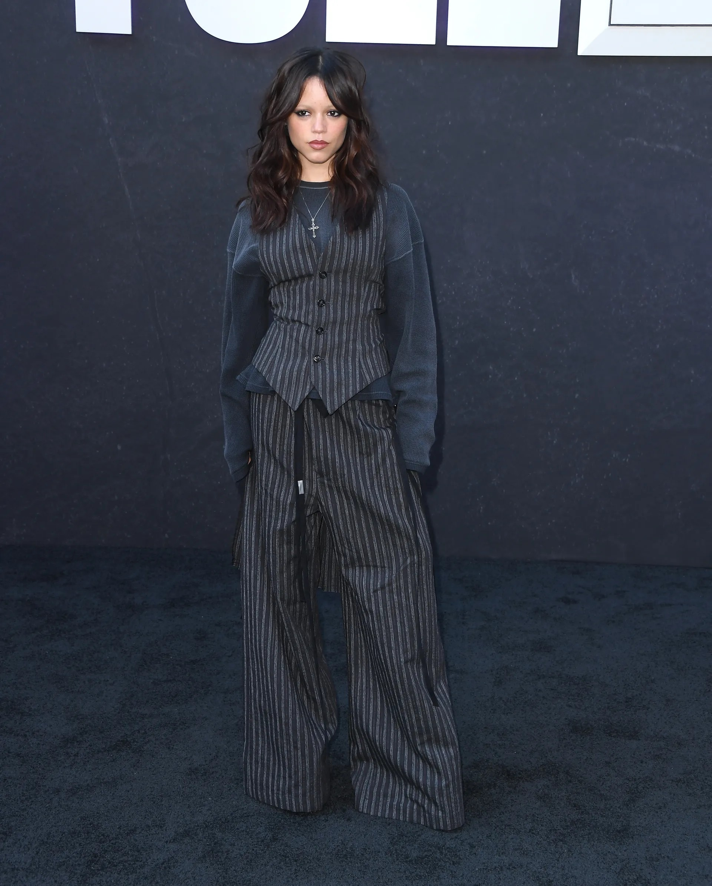

Jenna Ortega Resurrects the Going-Out Vest

Imagine, if you will, that it's 2007. Fergie, Avril Lavigne, Kim Kardashian, and the like are traipsing around, wearing vests layered over T-shirts and tank tops. For Fergie, those vests matched bowler hats, while Lavigne paired them with her signature neckties.
While the look is certainly reminiscent of the aughts, if anyone can revive the going-out vest in 2025, it's one Jenna Ortega.
Over the weekend, the actor attended a Wednesday For Your Consideration event in a pinstriped Ann Demeulemeester fall 2025 waistcoat and matching wide-legged, floor-skimming trousers, styled by Enrique Melendez.
Rather than embrace the glam-rock look that Stefano Gallici sent down the runway, however, Ortega and Melendez opted to revive the vest-over-shirt look of yore: underneath her vest, she wore a gray waffle crewneck shirt, its long sleeves falling over her hands.